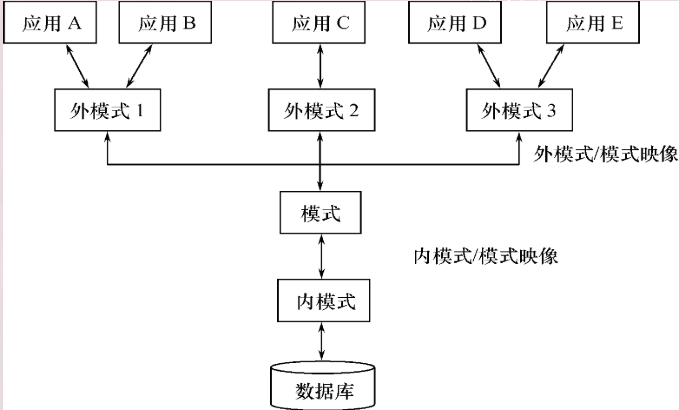

❖从数据库应用开发人员角度看，数据库系统通常采用三级 模式结构，是数据库系统内部的系统结构
❖从数据库最终用户角度看，数据库系统的结构分为: - 单用户结构 - 主从式结构 - 分布式结构 -客户-服务器 等
❖数据库的组成: 数据库 + 数据库管理系统（及其开发工具）+ 应用程序 + 数据库管理员
数据库系统模式的概念
型（type）
对某一类数据的结构和属性的说明
值（value）
是型的一个具体赋值
eg.
学生记录：
（学号，姓名，性别，系别，年龄，籍贯）一个记录值：
（201315130，李明，男，计算机系，19，江苏南京市）
模式（schema）
- 数据库逻辑结构和特征的描述
- 是型的描述，不涉及具体值
- 反映的是数据的结构及其联系
- 模式是相对稳定的
实例（instance）
- 模式的一个具体值
- 反映数据库某一时刻的状态
- 同一个模式可以有很多实例
- 实例随数据库中的数据的更新而变动
数据库系统的三级模式结构
模式（逻辑模式）
- 数据库中全体数据的逻辑结构和特征的描述
- 所有用户的公共数据视图
- 一个数据库只有一个模式
- 是数据库系统模式结构的中间层
- 与数据的物理存储细节和硬件环境无关
- 与具体的应用程序、开发工具及高级程序设计语言无关
模式的定义：
- 数据的逻辑结构（数据项的名字、类型、取值范围等）
- 数据之间的联系
- 数据有关的安全性、完整性要求
外模式（子模式OR用户模式）
数据库用户使用的局部数据的逻辑结构和特征的描述
数据库用户的数据视图，是与某一应用有关的数据的逻辑表示
介于模式与应用之间
模式与外模式的关系：一对多
外模式通常是模式的子集
一个数据库可以有多个外模式
对模式中同一数据，在外模式中的结构、类型、长度、保密级别等都可以不同
外模式与应用的关系：一对多
同一外模式也可以为某一用户的多个应用系统所使用
但一个应用程序只能使用一个外模式
外模式的用途
- 保证数据库安全性
- 每个用户只能看见和访问所对应的外模式中的数据
内模式
- 是数据物理结构和存储方式的描述
- 是数据在数据库内部的表示方式
- 一个数据库只有一个内模式
数据库的二级印象功能与数据独立性
三级模式是对数据的三个抽象级别
二级映像在数据库管理系统内部实现这三个抽象层次的联系和转换
外模式/模式 映像& 模式/内模式 映像
外模式/模式 映像
模式：描述的是数据的 全局 逻辑结构
外模式：描述的是数据的 局部 逻辑结构
- 同一个模式可以有任意多个外模式
- 每一个外模式，数据库系统都有一个
外模式/模式 映像，定义外模式与模式之间的对应关系映像定义通常包含在各自外模式的描述中 - 保证数据的逻辑独立性
- 模式改变时，数据库管理员对
外模式/模式作相应改变，使外模式保持不变 - 应用程序是依据数据的外模式编写的，应用程序不必修改，保证了数据与程序的逻辑独立性（数据的逻辑独立性）
- 模式改变时，数据库管理员对
模式/内模式 映像
模式／内模式映象是唯一的，定义了数据全局逻辑结构与 存储结构之间的对应关系。
映象定义通常包含在模式描述中
保证数据的物理独立性
- 当数据库的存储结构改变了（例如选用了另一种存储结构，数据库管理员修改模式／内模式映象，使模式保持不变。
- 应用程序不受影响。保证了数据与程序的物理独立性， 简称数据的物理独立性。
数据库模式
- 全局逻辑结构，是数据库的中心与关键
- 独立于数据库的其他层次
- 设计数据库模式结构时应首先确定数据库的逻辑模式
数据库的内模式
- 依赖于它的全局逻辑结构
- 独立于数据库的用户视图（外模式）
- 独立于具体的存储设备
- 将全局逻辑结构中所定义的数据结构及其联系按照一定的物理存储策略进行组织，以达到较好的时间与空间效率
数据库的外模式
- 面向具体二点应用程序
- 定义在逻辑模式之上
- 独立于存储模式和存储设备
- 当应用需求发生较大变化，相应外模式不能满足其视图要求时，该外模式就得做相应改动
- 设计外模式时应充分考虑到应用的扩充性
数据库的二级映像
- 保证了数据库外模式的稳定性
- 从底层保证了应用程序的稳定性
数据库系统的组成
数据库
数据库管理系统
应用程序
数据库管理员
还包括：
硬件平台及数据库
- 内存大
- 足够大的磁盘存放数据库和数据备份
- 要求系统有较高的通道能力，提高数据传送率
软件
- 数据库管理系统
- 支持数据库管理系统运行的操作系统
- 与数据库接口的高级语言及其编译系统
- 以数据库管理系统为核心的应用开发工具
- 为特定应用环境开发的数据库应用系统
人员
- 数据库管理员
- 系统分析员和数据库设计人员
- 应用程序员
- 最终用户